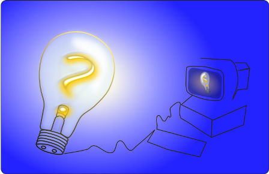
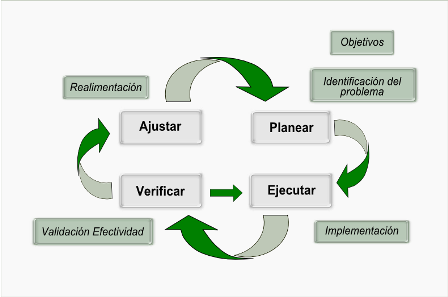
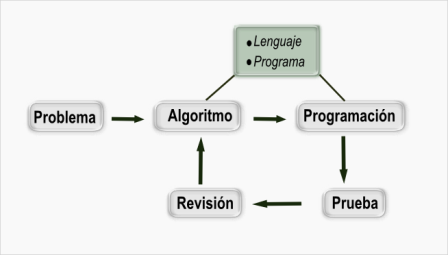
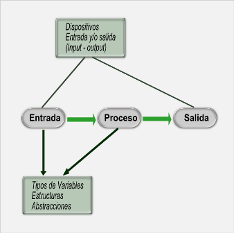

Capítulo II - Solución de problemas usando el computador

En general, en ingeniería se considera de gran importancia el tema de la solución de problemas, ya que es su esencia, plantear soluciones a la necesidad y requerimientos de la sociedad.
Se discutirá una de las aproximaciones generales al ciclo de la resolución de problemas y éste se particularizará al caso de la solución de problemas en computador o usando el computador. Esto es la base del diseño de programas de aplicación o “software”.
Objetivos de aprendizaje
- Conocer los ciclos de resolución de problemas.
- Aplicar ciclos de resolución de problemas al desarrollo de aplicaciones en computador.
- Comprender como se plantea un problema para solucionarlo con el computador.
Subtemas del capítulo
Pasos para la solución de problemas
El tema de solución de problemas (la clave en ingles es problem solving) cuenta con una amplia cantidad de información en diferentes medios; las referencias (Squidoo, 2011; CDE, 2011; Mobley, 2011; P-12, 2011) muestran algunos de los ejemplos que se pueden acceder sobre esta temática en general y podemos adaptar una de estas propuestas a nuestro tema especifico de programación de computadores.

Veamos el ciclo de la solución de problemas a partir de la imagen (GALEANO, 2011h). Podemos identificar 4 pasos fundamentales a partir de la identificación del problema y la definición de los objetivos fundamentales:
- Planear
- Ejecutar
- Verificar
- Ajustar
La actividad de Planear debe detallar lo mejor posible las actividades a desarrollar, los elementos que se requieren para realizar las actividades, tanto materiales como personas, y decir cuándo y en qué tiempo se deben realizar para lograr los objetivos o la solución del problema.
La actividad de Ejecutar está relacionada con hacer de manera ordenada y diligente lo que se tiene planeado. Esta actividad es el “presente”, mientras que la de planear es el futuro.
La actividad de Verificar consiste en definir la forma de valorar los logros de los objetivos inicialmente propuestos y contrastar lo planeado y lo ejecutado. En esta actividad se deben definir indicadores de tipo cuantitativo y cualitativo para hacer una valoración apropiada del avance hacia el objetivo.
La actividad de Ajustar es un replanteamiento de objetivos y planes a la luz de los logros y evaluaciones que se deben haber realizado en las actividades anteriores. Es esta actividad se debe tener muy en cuenta nuevas situaciones no tenidas en cuenta en los planes iniciales.
Estos pasos se cierran en un ciclo de mejoramiento continuo que puede ser si se quiere infinito. También se puede considerar terminar el ciclo en el momento que se considere que se han tenido los resultados deseados en buena medida.
 )
)Solución de problemas usando el computador
Cuando hablamos de solución de problemas usando el ordenador o computador (Barrueto, 2011; Méndez, 2011) el tema tiene ya implícita la palabra programación, pues se está pensando en cómo podemos hacer que la maquina realice una tarea específica y adicionalmente generalice la solución, en el sentido de que problemas similares pueden o podrían ser solucionados con el mismo programa; esto da al tema de solución de problemas unas peculiaridades adicionales.

La figura (GALEANO, 2011i) presenta un ciclo para solución de problemas con computador a partir del ciclo más general planteado en la figura (GALEANO, 2011h).
A partir de una definición clara del problema podemos plantear 4 pasos fundamentales para su solución usando el computador:
- Algoritmo
- Programación
- Prueba
- Revisión
La actividad de realizar el Algoritmo, podemos decir que es analoga a la actividad de planear del ciclo de la figura (GALEANO, 2011h). En esta actividad se debe describir de manera detalla cada uno de los procesos y tareas que deberá realizar el ordenador. Para esta actividad se discutirá más adelante formas de describir estos procesos, tales como los diagramas de flujo o los seudo codigos. Los métodos de descripción de los algoritmos no dependen directamente de los lenguajes de programación, pero por experiencia se sabe que el lenguaje de programación que se usa puede facilitar su interpretación para el paso siguiente.
En realidad, la selección del lenguaje de programación o de las herramientas de programación que se requieren para solucionar el problema, son una de las incógnitas en la solución del problema, y una buena selección de estas herramientas agiliza el trabajo y permite el logro de objetivos más rápidamente. En algunos casos el lenguaje de programación puede ser parte de la descripción del problema, pero el seleccionar las herramientas adicionales de programación que se requiere utilizar es parte de las incógnitas del problema. Como caso particular, en este curso partimos de utilizar un lenguaje de programación, el PYTHON, pero los módulos o programas adicionales que se requieren para poder solucionar nuestro problema particular serán incógnitas y se requerirá investigar y buscar las herramientas adecuadas para un fin particular.
La etapa de Programación, es el detalle del programa de computador en el lenguaje especifico. En otros términos, se le denomina código fuente. La escritura del programa requiere de un buen conocimiento del lenguaje específico y de sus diferentes estructuras y abstracciones para lograr un buen resultado. Un algoritmo puede ser programado de diferentes maneras, así que depende mucho del programador y el código fuente se puede considerar como una obra “literaria” si se quiere.
Para escribir los programas se debe estudiar detalladamente un lenguaje de programación y desarrollar intuición y experiencia usándolo y practicándolo. Un lenguaje de programación es un conjunto de palabras especificas nos permiten escribirle al ordenador la secuencia detallada de actividades que debe realizar para que en conjunto solucione nuestro problema particular. Ese conjunto de palabras debe ser lo suficientemente general como para permitirnos describir cualquier procedimiento que se requiera en la solución del problema y poder utilizar todas las potencialidades del computador.
La actividad de Prueba o validación, consiste en realizar pruebas controladas de lo que esperamos que debe realizar el ordenador después de programarlo. Las pruebas controladas consisten en problemas de los que ya conocemos sus respuestas y que se los ponemos a solucionar al computador para luego comparar su respuesta con la ya conocida. Esta actividad permitirá identificar errores en el programa para luego buscar en detalle donde se encuentran. La palabra en inglés DEBUG se usa para describir la actividad de búsqueda de errores en el programa. La anécdota de esta palabra figura en la historia desde 1947 (Wikipedia, 2011j).
La actividad de Revisión consiste en la aplicación del programa para lo que fue realizado y observar permanentemente su funcionamiento para ajustar los posibles detalles o aspectos que no se tuvieron en cuenta en la concepción inicial del algoritmo. Esta actividad puede dar lugar a redefinir el algoritmo o a reprogramas algunos aspectos. Los desarrolladores de programas suelen tener un canal directo con los usuarios para que informen posibles inconsistencias o errores al aplicar el programa.
Este ciclo se puede repetir indefinidamente para un mejoramiento continuo del programa o aplicación particular.

Un aspecto muy importante en las actividades de Algoritmos y Programación, se visualizan en la figura (GALEANO, 2011j), donde se muestra un modelo gráfico de la concepción del ordenador al realizar esta actividades. Podemos imaginarnos el ordenador como una máquina que realiza un proceso. A partir de una información de entrada retorna una información de salida y para realizar su proceso requiere disponer de la información en su propio ambiente. En su ambiente dispone de diferentes tipos de variables y abstracciones con las cuales realiza su actividad. De otro lado, están los medios físicos con los cuales se accede al ambiente de programación; esos medios físicos los denominamos dispositivos de entrada y/o salida. Estos dispositivos son de todo tipo, como por ejemplo, impresora, teclado, micrófono, ratón (mouse), pantalla, memoria USB, discos, etc. Cada uno de estos dispositivos requieren de programas específicos para interpretar la información del mundo exterior al computador y llevarla a su ambiente, a esos programas se les denomina driver.
Nota: A continuación se encuentran las referencias bibliográficas utilizadas para la construcción de los contenidos de este capítulo: